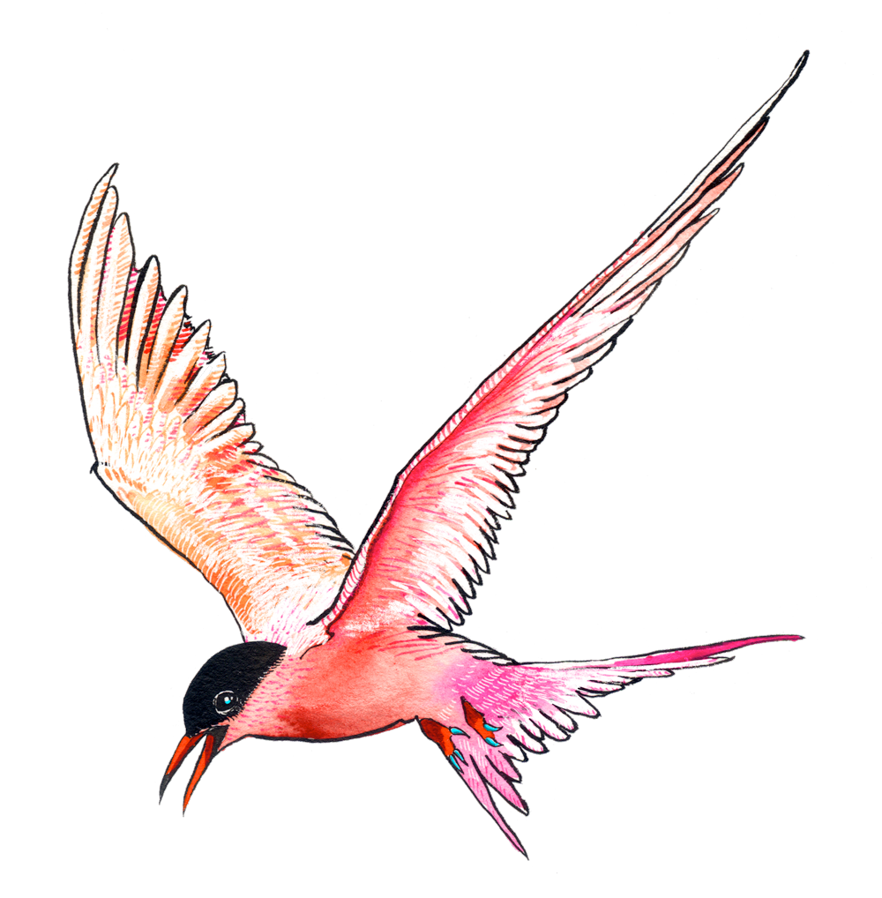
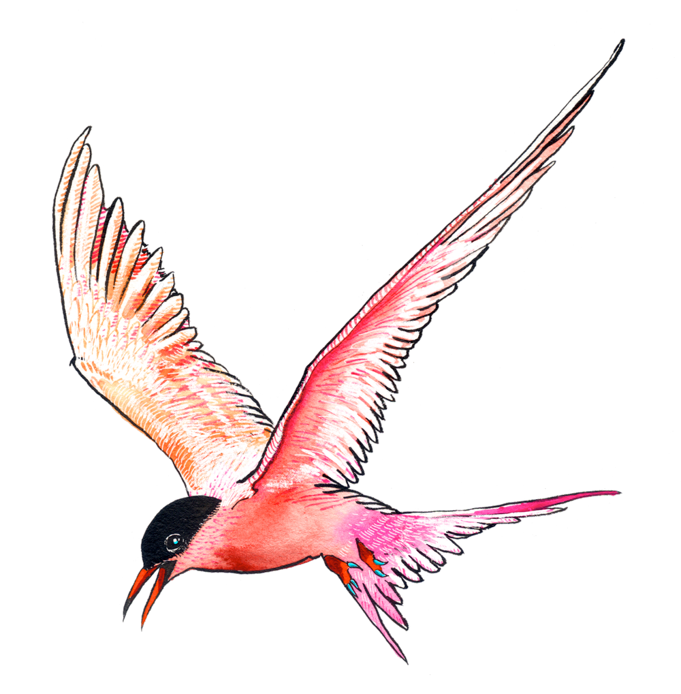

Putni (Aves) ir ar spalvām klāta endotermiska (siltasiņu) mugurkaulnieku klase, kas dēj olas un primāri ir specializējušies lidošanai. Kopā pavisam ir vairāk nekā 10 000 putnu sugu. Tie dzīvo visas planētas ekosistēmās, sākot no Arktikas līdz pat Antarktīdai. Putnu lielums var būt no 5 centimetriem, kā bišu kolibri (Mellisuga helenae), līdz pat 2,7 metriem (strausi). Putnus īsumā var raksturot kā divkājainus amniotus, kuru priekšējās ekstremitātes pārveidojušās spārnos, ķermenis klāts ar spalvām, ķermeņa temperatūra pastāvīga un ļoti augsta, tiem ir četrkameru sirds ar diviem kambariem un diviem priekškambariem, aortas loks ir tikai viens (labais), progresīvi attīstītas galvas smadzenes, it sevišķi priekšējo smadzeņu pusložu dibens, vidussmadzenes un smadzenītes. Putni vairojas, dējot olas un perējot mazuļus. Putnus pēta zooloģijas apakšnozare — ornitoloģija.